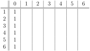
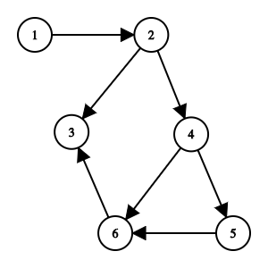
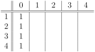
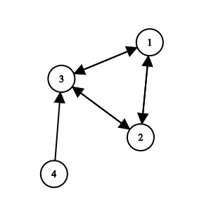

Section 3.2 Algebraic Centrality
Exercises Practice Problems
1. Adjacency Matrix of a Graph.
Find the adjacency matrix \(A\) of the following undirected graph, where \(A_{ij}=1\) if \((i,j) \in E\) (an undirected edge), and is 0 otherwise.
2. Adjacency Matrix of a Digraph.
Find the adjacency matrix \(A\) of the following directed graph, where \(A_{ij}=1\) if \((i,j)\in E\) (a directed arc), and is 0 otherwise. Note: the \(i\)th row contains all the arcs leading out of \(i\text{.}\) So construct the matrix row-by-row.
3. Reducible Matrices.
A \(n \times n\) matrix is reducible if there is an \(n \times n\) permutation matrix \(P\) such that
where \(A_{11}\) and \(A_{22}\) are square matrices. Conjugation by \(P\) rearranges the rows and columns. So this is equivalent to saying that we can order the vertices of \(G\) so that the adjacency matrix has the specified form.
Recall that if \(G\) is an undirected graph, then \(A\) is symmetric. Explain why the adjacency matrix of an undirected graph is reducible if and only if \(G\) is not connected.
Prove that the adjacency matrix of a directed graph \(G\) is reducible if and only if \(G\) is not strongly connected.
-
Suppose that \(G\) is an undirected graph, so that its adjacency matrix is symmetric. The undirected graph \(G\) is reducible if and only if there is a permutation matrix \(P\) such that
\begin{equation*} P^{\top} A P = \left[ \begin{array}{cc} A_{11} & 0 \\ 0 & A_{22} \end{array} \right]. \end{equation*}Finally, we note that the matrix \(P^{\top} A P\) simply corresponds to reordering the vertices of \(G\text{.}\)
(\(\Rightarrow\)) Suppose that \(G\) is reducible. There are no paths from the vertices of submatrix \(A_{11}\) to the vertices of submatrix \(A_{22}\text{.}\) So the graph is not connected.
(\(\Leftarrow\)) Suppose that \(G\) is not connected: let's suppose that \(G\) splits into two graphs \(G_1\) and \(G_2\) that have no edges between them. Create the adjacency matrix by listing the vertices in \(G_1\) and then listing the vertices in \(G_2\text{.}\) Then this adjacency matrix is of the desired form.
-
Let \(G\) be a digraph. (\(\Rightarrow\)) Suppose that its adjacency matrix is reducible, so that
\begin{equation*} P^{\top} A P = \left[ \begin{array}{cc} A_{11} & A_{12} \\ 0 & A_{22} \end{array} \right]. \end{equation*}Then there is is no path from any vertex in the second set to any vertex in the first set. So \(G\) is not strongly connected.
(\(\Leftarrow\)) Next, suppose that \(G\) is not strongly connected, Let \(S_1, S_2, \ldots, S_k\) be its strongly connected components. We claim that that there must be at least one SCC \(S_{i}\) that has no arcs leading to any other \(S_j\text{.}\) Otherwise, there would be a directed cycle that goes through multiple SCC's, so they would be part of a single SCC. Without loss of generality, there is no directed path from any vertex in \(S_k\) to any vertex in \(S_1, S_2, \ldots, S_k\text{.}\) List the vertices in \(S_1 \cup \ldots \cup S_{k-1}\) in \(A_{11}\) and list the vertices \(S_k \cup \) in \(A_{22}\text{.}\) The adjacency matrix has is irreducible.
4. Spectral Decomposition of a \(2 \times 2\) Matrix.
Let
Check that the vector \(\bv_1 = \begin{bmatrix} 1 \\ 2 \end{bmatrix}\) is an eigenvector of \(A\) for eigenvalue \(\lambda_1=2\text{.}\)
Check that the vector \(\bv_2 = \begin{bmatrix} 2 \\ -1 \end{bmatrix} \) is an eigenvector of \(A\) for eigenvalue \(\lambda_2 = -3\text{.}\)
Check that \(\bv_1\) and \(\bv_2\) are orthogonal vectors.
Confirm that \(A = \lambda_1 \bu_1 \bu_1^{\top} + \lambda_2 \bu_2 \bu_2^{\top}\) where \(\bu_1, \bu_2\) are eigenvectors of unit length in the direction of \(\bv_1, \bv_2\) respectively.
-
We have
\begin{equation*} A \bv_1 = \begin{bmatrix} -2 & 2\\ 2 & 1 \end{bmatrix} \begin{bmatrix} 1 \\ 2 \end{bmatrix} = \begin{bmatrix} 2 \\ 4 \end{bmatrix} = 2 \begin{bmatrix}1 \\ 2 \end{bmatrix}. \end{equation*} -
We have
\begin{equation*} A \bv_2 = \begin{bmatrix}-2 & 2\\ 2 & 1 \end{bmatrix} \begin{bmatrix} 2 \\ -1 \end{bmatrix} = \begin{bmatrix}-6 \\ 3 \end{bmatrix} = -3 \begin{bmatrix} 2 \\ -1 \end{bmatrix}. \end{equation*} -
Vectors \(\bv_1\) and \(\bv_2\) are orthogonal because
\begin{equation*} \bv_1 \cdot \bv_2 = \begin{bmatrix} 1 \\ 2 \end{bmatrix} \begin{bmatrix} 2 & -1 \end{bmatrix} = 2-2 = 0 \end{equation*} -
Our unit eigenvectors are \(\bu_1 = \frac{1}{\sqrt{5}} {1 \choose 2}\) and \(\bu_2 = \frac{1}{\sqrt{5}} {2 \choose -1}\text{.}\) We find that
\begin{align*} \lambda_1 \bu_1 \bu_1^{\top} + \lambda_2 \bu_2 \bu^{\top} &= \frac{2}{5} \begin{bmatrix} 1 2 \end{bmatrix} \begin{bmatrix} 2 & 4 \end{bmatrix}\\ - \frac{3}{5} \begin{bmatrix} 4 -2 \end{bmatrix} \begin{bmatrix} -2 & 1 \end{bmatrix}\\ &= \frac{1}{5} \left( \begin{bmatrix} 2 & 4 4 & 8\end{bmatrix} + \begin{bmatrix} -12 & 6 6 & -3\end{bmatrix} \right)\\ &= \frac{1}{5} \begin{bmatrix} - 10 & 10 10 & 5\end{bmatrix}\\ &= \begin{bmatrix} - 2 & 2 2 & 1\end{bmatrix} \end{align*}
5. Repeated Multiplications and Spectral Decomposition.
Suppose that we have a \(2 \times 2\) matrix with spectral decomposition
where \(\bu_1, \bu_2\) are orthonormal eigenvectors for eigenvalues \(\lambda_1\) and \(\lambda_2\text{.}\) Since these vectors are orthonormal, we have
The goal of this question is to estimate \(A^n \bx\) for large \(n\text{,}\) where \(\bx \in \R^2\) is an arbitrary vector.
Find the spectral decomposition for \(A^2=AA\) by using the spectral decomposition for each \(A\text{,}\) and then multiplying out. Solution.
We have \(A^2 = AA\) and so
\begin{equation*} AA = ( \lambda_1 \bu_1 \bu_1^{\top} + \lambda_2 \bu_2 \bu_2^{\top})( \lambda_1 \bu_1 \bu_1^{\top} + \lambda_2 \bu_2 \bu_2^{\top}). \end{equation*}We end up with four terms. Let's look at them one at a time. Since \(\bu_1^\top \bu_1=1\text{,}\) we have
\begin{equation*} \lambda_1^2 \bu_1 \bu_1^{\top} \bu_1 \bu_1^{\top} = \lambda_1^2 \bu_1 (\bu_1^{\top} \bu_1) \bu_1^{\top} = \lambda_1^2 \bu_1 \bu_1^{\top}. \end{equation*}Next, since \(\bu_1^\top \bu_2=0\text{,}\) we have
\begin{equation*} \lambda_1 \lambda_2 \bu_1 \bu_1^{\top} \bu_2 \bu_2^{\top} = \lambda_1 \lambda_2 \bu_1 (\bu_1^{\top} \bu_2) \bu_2^{\top} = \mathbf{0}. \end{equation*}Similarly,
\begin{equation*} \lambda_1 \lambda_2 \bu_2 \bu_2^{\top} \bu_1\bu_1^{\top} = \lambda_1 \lambda_2 \bu_2 (\bu_2^{\top} \bu_1) \bu_1^{\top} = \mathbf{0}. \end{equation*}and
\begin{equation*} \lambda_2^2 \bu_2 \bu_2^{\top} \bu_2 \bu_2^{\top} = \lambda_2^2 \bu_2 (\bu_2^{\top} \bu_2) \bu_2^{\top} = \lambda_2^2 \bu_2 \bu_2^{\top}. \end{equation*}So our final answer is
\begin{equation*} A^2 = AA = \lambda_1^2 \bu_1 \bu_1^{\top} + \lambda_2^2 \bu_2 \bu_2^{\top}. \end{equation*}What is the spectral decomposition of \(A^3 =A^2A\text{?}\) How about the spectral decomposition of \(A^n\text{?}\) Solution.
By a similar argument, we have
\begin{equation*} A^3 = \lambda_1^3 \bu_1 \bu_1^{\top} + \lambda_2^3 \bu_2 \bu_2^{\top} \end{equation*}and by induction, we have
\begin{equation*} A^n = \lambda_1^n \bu_1 \bu_1^{\top} + \lambda_2^n \bu_2 \bu_2^{\top} \end{equation*}The orthonormal vectors \(\bu_1, \bu_2\) form a basis for \(\R^2\text{.}\) So we can write any vector \(\bx \in \R^2\) as \(\bx = c_1 \bu_1 + c_2 \bu_2\text{.}\) Use your answer from part (b) to find an expression for \(A^n \bx\text{.}\) Solution.
Using this spectral decomposition, and the orthonormal properties of \(\bu_1, \bu_2\text{,}\) we get
\begin{align*} A^n \bx &= \left(\lambda_1^n \bu_1 \bu_1^{\top} + \lambda_2^n \bu_2 \bu_2^{\top}\right) (c_1 \bu_1 + c_2 \bu_2)\\ &= c_1 \lambda_1^n \bu_1 + c_2 \lambda_2^n \bu_2. \end{align*}Now let's suppose that \(|\lambda_1| > |\lambda_2|\) and that \(\bx\) is such that \(c_1 \neq 0\text{.}\) Explain why \(A^n \bx \approx k \bu_1\) for some constant \(k\text{.}\) Solution.
Let's factor out \(\lambda_1^n\) from this expression to get
\begin{align*} A^n \bx &= \lambda_1^n \left( c_1 \bu_1 + c_2 \left(\frac{ \lambda_2}{\lambda_1}^n \right) \bu_2. \right) \end{align*}As \(n\) gets really large, the fraction \((\lambda_2/\lambda_1)^n\) goes to zero. Therefore for large \(n\text{,}\) we have
\begin{equation*} A^n \bx \approx \lambda_1^n c_1 \bu_1. \end{equation*}
You have now shown that \(A^n \bx\) is converges to a vector in the span of the eigenvector \(\bu_1\) corresponding to the largest eigenvalue \(\lambda_1\text{.}\)
6. Recursive Importance in a Graph.
Consider the following recursive rule for updating the importance of a vertex.
At first, all vertices have importance = 1
In each round, update the importance of a vertex to be the sum of the importances of its neighbors.
Use this recursive rule to calculate the importance for the following undirected graph
7. Recursive Importance in a Digraph.
Consider the following recursive rule for updating the importance of a vertex.
At first, all vertices have importance = 1
In each round, update the importance of a vertex to be the sum of the importances of its in-neighbors.
Use this recursive rule to calculate the importance for the following directed graph. What do you observe?
Solution.\begin{equation*} \begin{array}{c||c|c|c|c|c|c|c} & \,\,0 \,\,& \,\,1 \,\, & \,\,2 \,\, & \,\,3 \,\, & \,\, 4 \,\, & \,\, 5 \,\, & \,\, 6 \,\, \\ \hline \hline 1 & 1 & 0&0&0&0 &0&0\\ 2 & 1 & 1&0&0& 0&0&0\\ 3 & 1 & 2&3&2& 2&1&0\\ 4 & 1 & 1&1&0& 0& 0&0\\ 5 & 1 & 1&1&1& 0&0&0\\ 6 & 1 & 2&2&2& 1&0&0\\ \end{array} \end{equation*}All of the importance eventually leaks out of the network.
Use this recursive rule calculate the importance of each vertex in this directed graph. What do you observe?
Solution.\begin{equation*} \begin{array}{c||c|c|c|c|c} & \,\,0 \,\,& \,\,1 \,\, & \,\,2 \,\, & \,\,3 \,\, & \,\, 4 \,\, \\ \hline \hline 1 & 1 & 2&5&9&19 \\ 2 & 1 &2 &5&9&19 \\ 3 & 1 & 3&4&10& 18\\ 4 & 1 & 0&0&0& 0 \\ \end{array} \end{equation*}In the limit, vertices 1,2,3 are equally important. Meanwhile, vertex 4 has no importance.
Devise a recursive importance rule for directed networks that "fixes the problems" that you observed in parts (a) and (b). Solution.
We need to fix the fact that importance leaks out of vertices in a weakly connected digraph. Here are two possible solutions.
Every vertex has inherent importance of 1. Update the importance to be 1 plus the sum of the importances of its in-neighbors
Pretend that there is a self-loop at each vertex. So the current importance of a vertex is included in the updated importance. Update the importance to be the vertex's current importance plus the sum of the importances of its neighbors.
You can also try different weighting schemes of how much to count your own importance versus the importance of your neighbors.